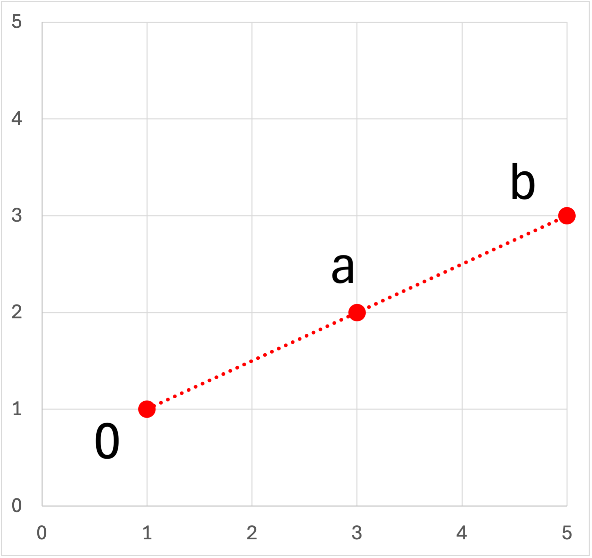
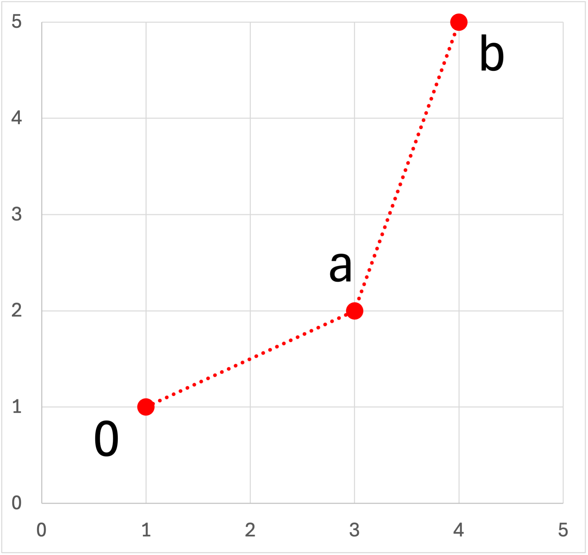
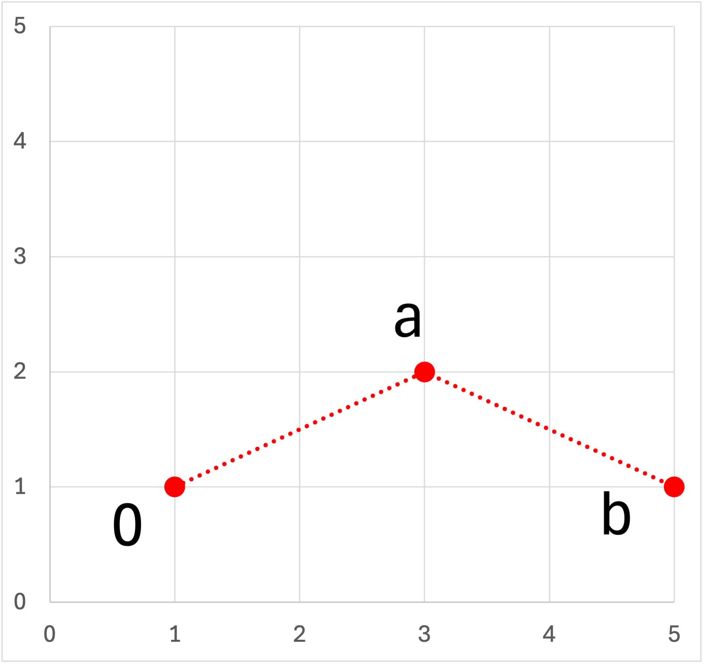

二次元軌跡から，移動速度，角度変化を求める方法-02
前ページにあるように，
・移動距離
\(\Large \Delta r = \displaystyle \sqrt{ (x_{t + \Delta t} - x_t)^2 + (y_{t + \Delta t} - y_t)^2} \)
・角度
\(\Large \theta = \displaystyle tan^{-1} \left( \frac{\vec{a} \times \vec{b}}{\vec{a} \cdot \vec{b}}\right) \)
でした． この角度が右回りか，左回りかは，分母の内積は＋の値ですから，分子の外積によるものと思われます．
外積は，
\(\Large\vec{a} \times \vec{b} = a_x \ b_y - a_y \ b_x \)
となります．ベクトルa,bの角度は（第一象限で考えると），
\(\Large\theta_a = \frac{a_y}{a_x} \)
\(\Large\theta_b = \frac{b_y}{b_x} \)
となり，もし反時計回りなら，
\(\Large\theta_b > \theta_a\)
となり，
\(\Large \frac{b_y}{b_x} > \frac{a_y}{a_x}\)
\(\Large a_x \ b_y - a_y \ b_x > 0 \)
となるため，外積が，
＋ ： 反時計回り
- ： 時計回り
となります．
では，角度変化の計算を具体的な数値を元に計算していきましょう．
・具体的な手順
具体的な手順としては，
１． 時系列上の各点の座標から，一つ前の座標からの差分を計算し，それぞれのベクトルを求める．
２． 一つ前のベクトルとの内積，外積を計算し，移動距離，角度を計算する
でした．実際に単純なデータから手順を見ていきましょう．
まずは，簡単なデータ列を作成します．
・角度変化：０
| x | y | Δx | Δy |
| 1 | 1 | ||
| 3 | 2 | 2 | 1 |
| 5 | 3 | 2 | 1 |

一直線ですので，角度変化は０のはず，計算してみましょう．
\(\Large\vec{a} \cdot \vec{b} = a_x \ b_x - a_y \ b_y = 2 \times 2 + 1 \times 1 = 5 \)
\(\Large\vec{a} \times \vec{b} = a_x \ b_y - a_y \ b_x = 2 \times 1 - 2 \times 1 = 0\)
\(\Large \theta = \displaystyle tan^{-1} \left( \frac{\vec{a} \times \vec{b}}{\vec{a} \cdot \vec{b}}\right) = tan^{-1} \left( \frac{0}{5}\right) = 0\)
となり，角度変化は０であることがわかります．
・角度変化：＋
| x | y | Δx | Δy |
| 1 | 1 | ||
| 3 | 2 | 2 | 1 |
| 4 | 5 | 1 | 3 |

計算してみましょう．
\(\Large\vec{a} \cdot \vec{b} = a_x \ b_x - a_y \ b_y = 2 \times 1 + 1 \times 3 = 5 \)
\(\Large\vec{a} \times \vec{b} = a_x \ b_y - a_y \ b_x = 2 \times 3 - 1 \times 1 = 5\)
\(\Large \theta = \displaystyle tan^{-1} \left( \frac{\vec{a} \times \vec{b}}{\vec{a} \cdot \vec{b}}\right) = tan^{-1} \left( \frac{5}{5}\right) = 45^o\)
となり，角度変化は45度であり，θb > θaであるので外積がプラスであることがわかります．
・角度変化：-
| x | y | Δx | Δy |
| 1 | 1 | ||
| 3 | 2 | 2 | 1 |
| 5 | 1 | 2 |
-1 |

計算してみましょう．
\(\Large\vec{a} \cdot \vec{b} = a_x \ b_x - a_y \ b_y = 2 \times 2 + 1 \times (-1) = 3 \)
\(\Large\vec{a} \times \vec{b} = a_x \ b_y - a_y \ b_x = 2 \times (-1) - 1 \times 2 = -4\)
\(\Large \theta = \displaystyle tan^{-1} \left( \frac{\vec{a} \times \vec{b}}{\vec{a} \cdot \vec{b}}\right) = tan^{-1} \left( \frac{-4}{3}\right) = -53.1^o\)
となり，角度変化は-53度であり，θb < θaであるので外積がマイナスであることがわかります．